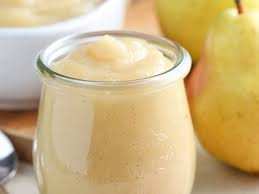

Apple pie

Descriere
Pear applesauce? Papplesauce? Appearsauce? When the apple-pear sauce is served warm, you will not need any additional sugar.
As it cools it loses some of the natural sweetness, and you might want to add sugar to taste.
Ingrediente
- 4 pears, cut into chunks
- 3 apples, cut into chunks
- ½ cup water
- 1 teaspoon vanilla extract
- ¼ teaspoon ground cinnamon
Steps
- Heat a skillet over medium heat; add pears, apples, water, and vanilla extract to the hot skillet
- Remove skillet from heat and transfer fruit mixture and any remaining liquid to a food processor.